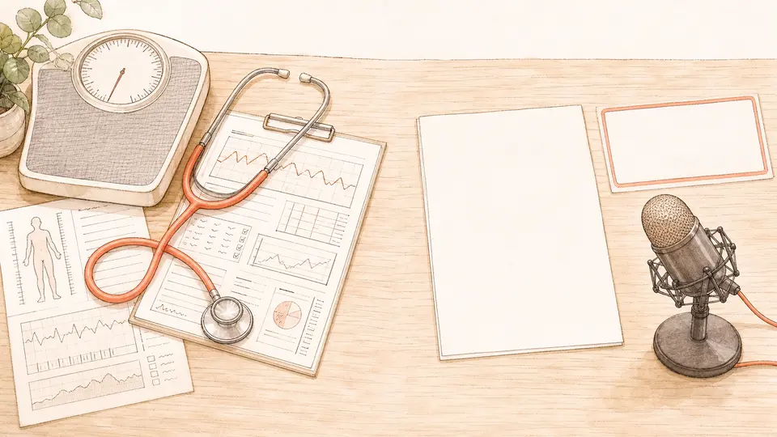

録音した自分の声を聞き返して、そう思ったことはありませんか？

見た目は、鏡で毎日確かめられます。
でも、声は鏡では見れません。
こんな状況に心当たり、ありませんか？
※医療機関の検査ではありません。声の使い方をみる、ボイストレーナーの検診です。
＼ 受付開始を、見逃したくない方へ ／
事前登録しておくと、受付開始の24時間前に申込リンクが届きます。
お知らせを受け取る
9月を待たずに、いま声の相談をしたい方は
無料の個別相談（応募制）はこちら